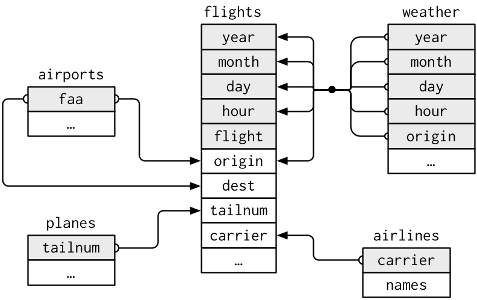
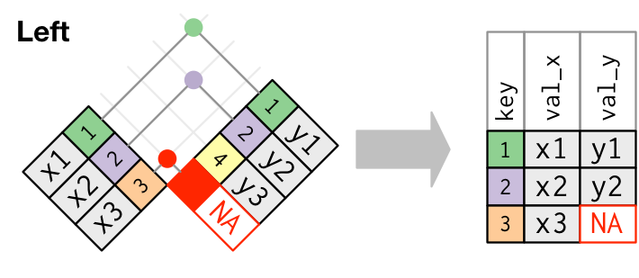
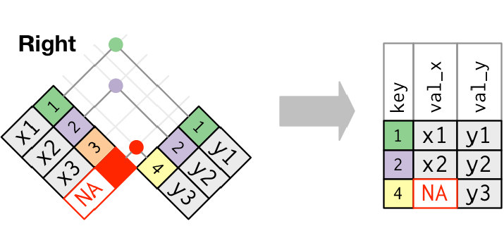
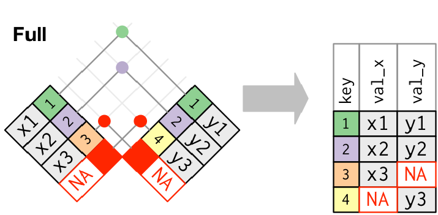
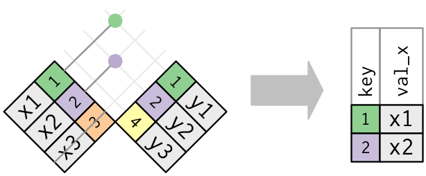

Computing for the Social Sciences: Lecture 10
Topics: Importing Data with readr; Relational Data with dplyr
Agenda
- Importing & Exporting Data in R
- Relational Data
Slides last updated on July 01, 2026. Slides authored by Sabrina Nardin. AI used to polish slides style and fix typos.
1. Importing & Exporting Data in R
Importing files into R
To load files with data into R, we need importing functions
There are several importing functions. The best one depends on the type of file we want to import. For an overview, see today’s reading: R for Data Science, Chapter 7
The most common type of file you will encounter is a CSV file (comma-separated values), so we will focus on the function that imports it: read_csv()
Importing CSV files into R
To import CSV files into R, there are two functions. They are very similar, but use the second:
- Built into R (e.g., comes from base R)
- Common in older code
- Uses a period
read.csv()
- From readr (e.g., comes from the tidyverse)
- Faster and common in newer code
- Uses an underscore
read_csv()
Type ?read.csv() and ?read_csv() in your Console for more info.
The function read_csv()
The read_csv() function has many arguments. The file argument is required because R needs to know where the file is. A few options to pass it:
library(readr)
# Option 1: Use the full file path
read_csv(file = "/home/nardin/testdata.csv")
# Option 2 (best): Use only the file name
# This works only if the file is in your current working directory
read_csv(file = "testdata.csv")
# Check your current working directory
getwd()
# Option 3: Choose the file manually
# Not recommended for reproducible code
read_csv(file = file.choose())💻 Practice: Load Data in R
Complete these steps:
Create a
testdata.csvdata file with four columns (id, name, age, food). We include different data types and a few missing data.Save it on your desktop with a
csvextension.Open Workbench: upload the file to the server.
Check your current working directory by typing
getwd()in the Console.Run
library(tidyverse)and import the data into R usingread_csv(). If you do not provide a path, R looks in your working directory by default.
Common Arguments of read_csv()
The read_csv() function has many arguments. In the next slides, we will focus on the ones that address common import issues: file paths, column names, column types, and missing values.
You can see the full list of arguments of this function in the readr documentation.
Let’s start by using read_csv() with the data you just created testdata.csv without changing any of the arguments. Like this:
YOUR TURN: Run this code in your Console to import the data into R. What do you notice?
Modify the col_types argument
By default, read_csv() guesses the column types:
But we can also tell R what each column type should be:
# Option 1: spell out each column type
read_csv(
file = "testdata.csv",
col_types = cols(
id = col_integer(),
name = col_character(),
age = col_integer(),
food = col_character() ))
# Option 2: use a shortcut
read_csv(
file = "testdata.csv",
col_types = "icic")YOUR TURN: Choose one option and run it in your Console. What do you notice about the imported data?
Modify the na argument
By default, read_csv() treats empty cells and "NA" as missing values:
But we can add other values that should count as missing by costumizing what goes into the vector c():
YOUR TURN: Run this code in your Console. What do you notice about the imported data?
Modify the col_names argument
By default, read_csv() treats the first row as column names:
But we can tell R that the file does not have column names:
YOUR TURN: Run this code in your Console. What do you notice about the imported data?
Modify the skip argument
By default, read_csv() starts reading from the first row:
But we can tell R to skip rows at the top of the file:
YOUR TURN: Run the code in your Console. What do you notice about the imported data?
Tip
Use skip when your CSV has extra or messy rows at the top!
Takeaways from using read_csv()
Importing files correctly matters because small import mistakes can create problems later.
When something does not import correctly, the first thing to do is to check the function read_csv() arguments: there are many options that can help you tell R exactly how to read your file!
Key Concepts for importing files
Now let’s talk about a few related concepts about importing data…
In the next slides, we will introduce the following terms:
- Working directory
- Relative path
- Absolute path
- RStudio project
Working directory: where R looks first
Working directory: the folder where R looks for files by default.
For example, this code only works if testdata.csv is located in your current working directory:
To check your current working, use:
Working directory: where R looks first
If R says it “cannot find” a file, ask yourself: Is the file in the folder where R is looking?
If the answer is no, you have two options:
- Move the file into the folder shown by
getwd() - Update the path so R knows where to find the file. When you do that, get into the habit of using a relative path
Relative path vs. Absolute path
Both are used to tell R where the file you want to load into R is located:
Relative path ✅
Starts from the current working directory:
If the file is inside a folder:
Best practice for reproducibility and shared code.
Why we prefer Relative paths
Relative path means relative to (e.g., it starts from) your R project folder. Relative paths make your code easier to share and re-run.
Absolute path means you specify the entire path to reach the file, independent from specific folders.
How do I make sure I am using a relative path correctly?
Check where R is looking for a file using
getwd(). Then make sure your file is in that locationOR use RStudio Projects! (next slide)
RStudio Projects make using relative file paths easier!
An RStudio Project is a folder that contains a .Rproj file.
When you open the .Rproj file, RStudio automatically sets the working directory to that project folder.
This makes relative paths easier to use.
If you open homework-05.Rproj, R will automatically start from the homework-05 folder as your default working directory.
Then you can import the data using read_csv("data/testdata.csv")
RStudio Projects .Rproj
RStudio Projects automatically set the working directory for you, based on your active project:
- ensures portability across computers and a reliable behavior!
- you do not need to set the working directory manually
- but you do need to check in which project you are working
Example: Each homework and in-class exercise folder in this course contains a .Rproj file. When you open that project in RStudio, the working directory is automatically set to that folder.
Tip: If you switch to another project, RStudio automatically updates the default working directory for you. Always check which project you’re working in.
💻 Practice: Create an RStudio Project
Step 1: Open RStudio and navigate to the top-left menu. Then File > New Project…
Step 2: Choose New Directory, then select New Project
Step 3: Name your project and save it.
Step 4: Click Create Project. RStudio will open a new session within your project environment. Done!
Step 5: Let’s test it. In your new project, create a new R script or R Markdown document. Inside it type and run getwd(). What do you notice?
Other readr functions to import data
The readr package include several functions to load into R almost all possible file formats that you might encounter (when given an option though, choose a CSV over other formats).
For example:
- Comma separated csv use
read_csv()from thereadrpackage - Semi column separated csv use
read_csv2()from thereadrpackage - Tab separated files use
read_tsv()from thereadrpackage - RDS use
readRDS()orread_rds() - Excel use
read_excel()from thereadxlpackage - SAS/SPSS/Stata use the
havenpackage (several functions)
Cheat Sheet for readr: Help > Cheat Sheets > Browse Cheat Sheets
Using haven with SPSS or Stata
SPSS:
Stata:
Exporting data with write_csv()
So far we talked about IMPORTING DATA into R with read_csv() from readr
But readr has also several functions for EXPORTING DATA back to your computer. The most common is write_csv() which generates csv files from R data frames.
Minimal Example:
2. Relational Data with dplyr
Definition of Relational Data
Relational Data are typically organized in relational databases set of multiple “tables” that are linked based on data common to them. You can think of a single “table” as a single dataframe.
These tables provide meaningful insights only when combined together!
Answers to research questions are not defined by one in a single table; rather, they emerge from the relationships among tables.
Our Focus
There are several software and languages to deal with relational databases. For an overview, see “Chapter 21 Databases” from our book.
R allows us to work with tables using the dplyr package. That’s our focus!
We use the flights example from the readings
We use data from library(nycflights13) in “Chapter 19 Joins” from “R for Data Science” 2nd Ed.
This database has five tables (e.g., five distinct datasets):
flightsinfo about flights, identified by multiple variables
airlineseach airplane company name, identified by the abbreviatedcareercode
airportsinfo about each airport, identified by thefaacode
planesinfo about each plane, identified by itstailnumnumber
weatherinfo about the weather at each NYC airport for each hour, identified by various variables
Load the data into R with library(nycflights13)
We use the flights example from the readings
Visual representation of the relations among the 5 tables in nycflights13:

To understand diagrams like this, remember that each relation concerns a pair of tables.
In pratice… when using dplyr to work with relational data, we have:
1. Mutating joins
2. Filtering joins
1. Mutating joins
This group includes:
inner join: keeps observations that appear in both tables
outer join: keeps observations that appear in at least one of the tables
- left join: keeps all observations in left table
- right join: keeps all observations in right table
- full join: keeps all observations
- left join: keeps all observations in left table
inner_join()
Keeps obs. that appear in both tables, identified by keys (colored numbers). Unmatched rows are dropped.


left_join()
Keeps all obs. in the left table (x), even if there is not a match in the right table (y).

right_join()
Keeps all obse. in the right table (y), even if there is not a match in the left table (x).

full_join()
Keeps all obs., matches and non-matches (e.g., more missing values).

Venn Diagram

Filtering joins
Other than mutating joins, dplyr has filtering joins;
- semi_join: keeps all observations in x that have a match in y
- anti_join drops all observations in x that have a match in y
Essentially these function use information from the second data frame (y) to filter observations from the first data frame (x).
semi_join()
Keeps all obs. in x that have a match in y. Only keeps columns from the first table you pass in the code (x).

anti_join()
Drops all obs. in x that have a match in y. Only keeps columns from the first table you pass in the code (x).

💻 Practice working with relational data with dplyr
Download today’s in-class materials from the website for more practice!
Recap: What We Learned Today
- How to import data with
read_csvand export data usingwrite_csv - How to work with relational data using
dplyr
To print these slides as pdf
Click on the icon bottom-left corner (the three lines) > Tools > PDF Export Mode > Print as a Pdf